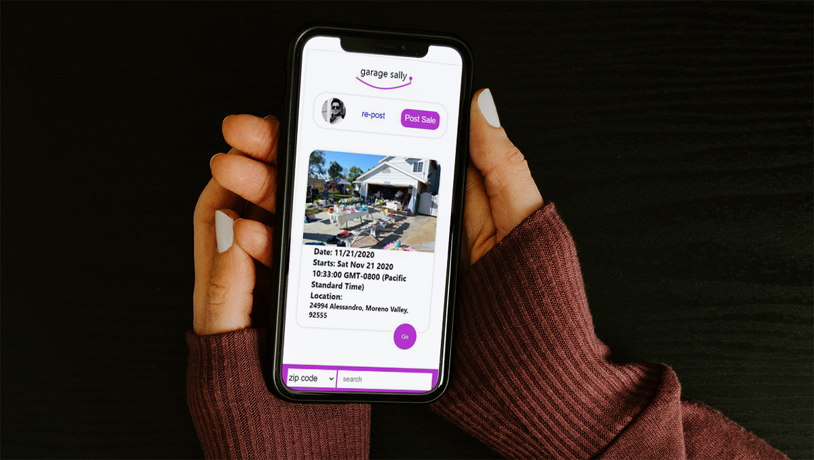

Project information
- Name: Garage Sally
- Category: Front-End Engineering | Collaborative
- Tech: MERN | RESTFUL APIs| SPA | GitHub
- Project date: 01 Nov, 2020
Network for people to search and post local garage sales.
- Defined database queries to Garage Sally’s Non-Relational, NoSQL database (MongoDB) using Axios a nd Javascript’s N ODE.js allowing users to view all local posts and details of specific sales.
- Interpreted incoming RESTFUL API data from Google Maps API t o generate maps, location markers and directions cultivating superior convenience for the user.
- United front-end REACT render elements to front end query logic generating a link betwee user interface , server and database.
- Utilized Git and Githubb for version control which kept a working history of the applications development process as well as the emergence of different versions.